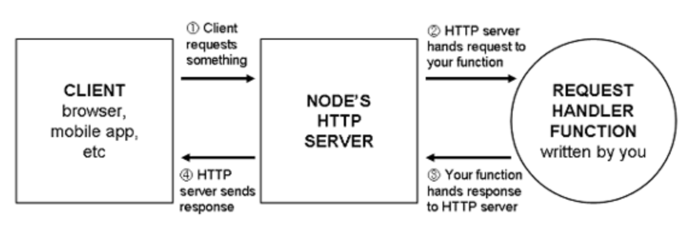

Express - Node.js Web应用程序框架
分享者: 周平 (前端-研发工程师)
时间: 11月17日 下午5:00-6:00
地点: 上海图灵会议室(38F)
- 什么是Express
- Express与Node.js
- 中间件
- 路由
- 视图
- 案例 - 调试


Node.js 处理请求var app = http.createServer(function(request, response) {
response.writeHead(200, { "Content-Type": "text/plain" });
response.end("Hello, world!");
});
Express 处理请求var express = require("express");
var http = require("http");
var app = express();
app.use(function(request, response) {
response.writeHead(200, { "Content-Type": "text/plain" });
response.end("Hello, World!");
});
http.createServer(app).listen(3000);
...
中间件与原生的Node处理函数非常类似(接受一个请求并做出响应),但是与原生不同的是,中间件将处理过程进行划分,并且使用多个函数构成一个完整的处理流程